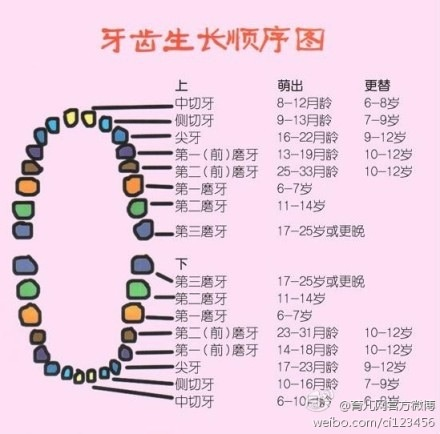

牙齿发育顺序及注意事项
牙齿发育顺序
牙齿的萌出、发育是一个连续的过程，包括生长、钙化和萌出。整个发育过程与机体内、外环境有着十分密切的关系，与机体的代谢平衡、神经系统的调节、以及营养、内分泌等都有关。
牙胚（未发育成熟的恒牙胚芽）埋于上下颌骨内，随着颌骨的生长发育，牙胚亦发育化，直至牙冠突破牙囊，穿破牙龈而显露于口腔。牙冠破龈而出称为出龈。

从牙冠出龈到上下牙咬合正常，此时牙根尚未完全形成，牙周附着不牢固，牙槽骨也较疏松，易受外力的影响。若唇、颊舌的压力大小和方向不正常、不平衡，或有不良的吮指、唇的习惯等，恒牙萌出时乳牙早失、牙间隙不足，都可造成牙齿异位畸形。
-
牙齿萌出的特点是：
- 牙齿萌出有一定次序，萌出先后与牙胚发育的先后基本一致。
- 牙齿的萌出有一定的时间，但其生理范围较宽，个人差异较大。
- 左右同名牙大致同时出龈。
- 下颌牙萌出略早于上颌的同名牙。
保护牙齿方法
在整个换牙期间，是儿童保护牙齿的重要时期。
首先，最早萌出的第一个恒磨牙，即六龄磨牙对孩子颌面部的生长有定位、定高的作用，对其他牙齿萌出，排列整齐与否都有影响，保护好它可终生受益。
其次，换牙期间要注意矫正儿童的各种不良习惯。在长达6—7年的换牙期间，儿童通常易出现的不良习惯，如咬指甲，咬唇、咬舌、伸舌、舔牙等，可直接影响牙列不整齐美观，面部发育不对称，从而留下容貌上的终身遗憾。还有的恒牙虽已萌出，但个别乳牙仍不脱落，应到口腔科拔除。对于个别顽固的、自己不能改正的不良习惯，应尽早到口腔科就诊，配戴矫治器以协助纠正。
其三，注意预防和治疗乳磨牙龋病。换牙期乳磨牙易患龋病，如龋齿引起根尖病，可影响继发恒牙的生长萌出，因此要注意乳磨牙龄病的及时治疗和预防，决不能有乳牙迟早要换，坏了也不必治的错误观念。医生忠告：应当尽量使乳牙保留到恒牙萌出，如乳牙过早缺失，常导致继发恒牙萌出间隙不足而引起牙列不齐，甚至导致恒牙埋而不出。
其四，要对出恒牙定期观察矫治。换牙时前恒牙以乳牙的下方或内侧萌出，萌出的恒牙即为成人牙齿的大小，出现轻度拥挤、扭转或间隙是正常的，可随邻牙的萌出和颌骨的生长发育而自行调整排齐，只要不是反牙（即地包天），一般不必矫治，但要做定期观察，最长不应超过半年。如在乳牙完全替换后仍排列不齐，应及时就诊，以免因延误治疗，造成矫正困难。
其五，教育换牙期的孩子特别注意牙齿保健。换牙期由于牙齿排列不齐，恒牙萌出，乳牙滞留，引起的双排牙，此时如多食含蔗糖食物及不注意口腔卫生，引起牙齿清洁不良，食物滞留，易导致乳、恒牙发生龋齿。
因此，这一时间应注意教育孩子认真刷牙，多吃含纤维食物，有助于牙龄自洁，促进颌骨及颌面部的生长发育。
儿童换牙期六大注意
对五六岁的孩子来说，换牙可能比让他们弹钢琴、滑旱冰、学算术更重要。因为，新长出的恒牙几乎要伴随他们一生，而且关系到饮食、面貌，甚至心理。 换牙期的保健与护理非常重要，直接关系到孩子今后的牙齿是否整齐、美观。因此，做父母的在此期间应该对孩子加强护理，让孩子拥有一口好牙。
- 注意1：乳牙是否滞留或早失
乳牙脱落有一定的时间和顺序，应脱落而不落称乳牙滞留，其后果往往是恒牙不能在正常的位置萌出。大多数孩子在五六岁时开始换牙，也有的从4岁开始，个别孩子会迟到7岁才掉第一颗乳牙。牙齿的脱落通常从下边的两颗门牙开始，继而是上面的两颗门牙。
最常见的是下前恒牙在乳牙内侧长出，上前恒牙在乳牙的外侧长出，看起来像是双层牙。遇到这种情况该怎么办呢？应尽快带孩子去医院拔除滞留的乳牙，腾出位置，以利恒牙萌出。
若乳牙在应脱落之前就脱落了，称为乳牙早失，这往往会造成两侧邻牙向缺牙空隙倾斜，使缺牙间隙变小，恒牙因间隙不够而错位萌出。此时应在乳牙缺隙处戴缺隙保持器（由医院口腔科订做），防止两侧牙齿倾斜，以保持恒牙应有的萌出位置，直至恒牙萌出。
- 注意2：恒牙萌出是否有困难
乳牙过早脱落，孩子习惯用牙床咀嚼、舔吮，牙床会变得肥厚，阻碍恒牙萌出。因此，如果孩子已到换牙的年龄而恒牙未长出，应带孩子及时到医院检查，以取得医生的帮助。孩子缺钙也是恒牙迟迟萌出的重要原因，父母要及时给孩子补钙。
换牙时前恒牙从乳牙的下方或内侧萌出，萌出的恒牙即为成人牙齿的大小，出现轻度拥挤、扭转是正常的，可随邻牙的萌出和颌骨的生长发育而自行调整排齐，只要不是反牙（即地包天），一般不必矫治，但要定期观察，最长不应超过半年。如在乳牙完全替换后仍排列不齐，应及时就诊，以免因延误治疗，造成矫正困难。
- 注意3：纠正孩子不良习惯
在换牙期，乳牙与恒牙共存，恒牙刚刚萌出，特别是作为“咬合关键”的“六龄牙”，体积大、咬合面窝沟多，容易滞留食物残渣，加之多数儿童刷牙不彻底，常容易发生龋坏。此时最重要的是教会孩子正确地刷牙。在换牙期，乳牙松动即将脱落时，儿童常习惯用舌舔松动的牙，这是一种不良习惯，会影响恒牙的正常萌出，应及时给予纠正。
- 注意4：牙齿错位咬合会影响容貌
儿童在换牙期，牙齿在替换，颌骨在发育，随之逐渐建立咬合关系，有时会出现暂时性的错位咬合，在牙齿的发育过程中，往往能自行调整而恢复正常。有的错位咬合，如因上唇唇系带位置过低而造成上前牙间隙过大，不能自行调整，会影响颜面发育，应去医院诊治，否则将影响孩子的容貌。
- 注意5：预防和治疗乳磨牙龋病
换牙期乳磨牙易患龋病，如龋齿引起根尖病，可影响继发恒牙的生长萌出，因此要注意乳磨牙龋病的及时治疗和预防，绝不能有“乳牙迟早要换，坏了也不必治”的错误观念。医生忠告：应当尽量使乳牙保留到恒牙萌出，如乳牙过早缺失，常导致继发性恒牙萌出间隙不足而引起牙列不齐。
- 注意6：换牙时宜多吃耐嚼食品
孩子到六七岁左右，恒牙就开始陆续萌出，替换原有的乳牙。有些孩子恒牙虽已萌出，乳牙却常常不肯“让位”，迫使恒牙不得不从乳牙的内侧长出，形成“双层牙”，造成恒牙排列不整齐。
引起乳牙滞留迟脱的原因很多，最常见的是孩子进食过于精细，没有充分发挥牙齿的生理性刺激。牙齿的主要功能是咀嚼食物，咀嚼食物能促进乳牙牙根的生长发育以及自然吸收、脱落。
因此，随着孩子年龄的增长，应让孩子多吃些耐嚼食物，以保持对乳牙良好的刺激作用，促使乳牙按时脱落。当孩子门牙和后磨牙都已萌出，可给其增加些芹菜、玉米、苹果等食物，使换牙顺利完成，让孩子拥有一口健康整齐的牙齿。